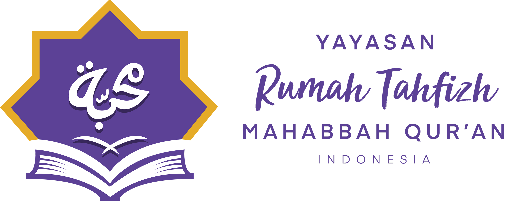
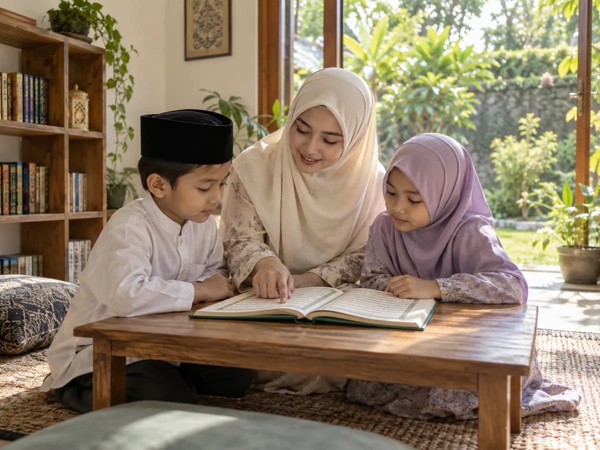

Janji Santri
Komitmen moral yang menemani langkah santri.

RUMAH TAHFIZH MAHABBAH
Mendampingi anak belajar Al-Qur’an sekaligus menumbuhkan adab dan kebiasaan baik dalam kesehariannya.
Program anak • remaja • dewasa

Belajar Qur’annya. Bertumbuh karakternya.
Ilustrasi AI · bukan foto kegiatan Mahabbah
HARAPAN YANG KITA PUNYA BERSAMA
Kita tentu bahagia ketika anak semakin lancar mengaji.
FILOSOFI MAHABBAH
Kami ingin perjalanan bersama Al-Qur’an tidak berhenti pada kemampuan membaca atau jumlah hafalan, tetapi perlahan hadir dalam sikap dan kebiasaan santri.
SISTEM YANG MENEMANI PERTUMBUHAN
Enam bagian yang saling terhubung dalam Kurikulum Karakter Qur’ani Mahabbah.
Komitmen moral yang menemani langkah santri.
Sepuluh nilai dasar yang ditumbuhkan bersama.
Perjalanan karakter dasar secara bertahap.
Kecakapan karakter melalui praktik nyata.
Jejak perjalanan perkembangan setiap santri.
Cerita perkembangan untuk orangtua.
DASA KARAKTER QUR’ANI
Mendekat kepada Allah melalui kebiasaan baik.
Menyapa dengan hangat dan mengucapkan salam.
Bersikap lembut dalam pergaulan sehari-hari.
Memilih kata yang baik dan menenangkan.
Belajar memuliakan mushaf dan waktu mengaji.
Merawat diri dan lingkungan bersama.
Membiasakan kebaikan, sedikit demi sedikit.
Menghormati orangtua dan guru.
Belajar menyelesaikan tugas sendiri.
Peka dan hadir untuk membantu sesama.
TKU MAHABBAH
Perkembangan karakter dilakukan secara bertahap sampai kebaikan semakin mandiri dan konsisten dilakukan.
TKU 1
Aku tahu dan mau melakukan.
TKU 2
Aku bisa melakukan tanpa selalu diingatkan.
TKU 3
Aku melakukan dan mengajak orang lain melakukan kebaikan.
TKU 4
Aku membawa nilai Qur’an di mana pun berada.
KEBIASAAN KECIL, MAKNA BESAR
Masih harus selalu diingatkan.
Merapikan setelah diingatkan.
Merapikan sendiri.
Merapikan sendiri dan mengajak teman.
“Karakter itu ditumbuhkan,
bukan sekadar diuji.”
Catatan guru
Contoh visual paspor · bukan dokumen final
PASPOR KARAKTER QUR’ANI
Melalui Paspor Karakter Qur’ani, perjalanan karakter santri dapat dicatat dari jenjang TKU, pencapaian TKK, catatan guru, refleksi santri hingga pengukuhan.
TKK MAHABBAH
Melalui TKK Mahabbah, santri memperoleh kecakapan karakter melalui praktik nyata.
Badge bukan tujuan akhir. Ia menjadi tanda perjalanan dan pengingat kebiasaan baik yang sedang tumbuh.
GURU × SANTRI × ORANGTUA
Tujuan akhirnya bukan membuat anak terlihat baik ketika sedang dinilai, tetapi membantu kebaikan perlahan hadir dalam kesehariannya.
Mendampingi & mengamati
Berlatih & membiasakan
Melihat & menguatkan
Rumah Tahfizh Mahabbah ingin menemani santri agar semakin dekat dengan Al-Qur’an dan perlahan membiasakan nilai-nilainya dalam keseharian.
RAPOR KARAKTER
Orangtua juga perlu melihat bagaimana perjalanan anak bertumbuh.
Belajar Al-Qur’an, perkembangan karakter, dan kebiasaan nyata diceritakan bersama agar pendampingan dapat berlanjut di rumah.
Contoh format · bukan data santri
Hafalan · Murojaah · Tilawah · Tahsin · Adab terhadap Al-Qur’an
Perkembangan Dasa Karakter Qur’ani.
Catatan konkret tentang kebiasaan yang mulai berkembang dan hal yang masih membutuhkan pendampingan.
PROGRAM MAHABBAH
Perjalanan bersama Al-Qur’an bisa dimulai dari usia dan kemampuan yang berbeda.
Qur’an Kids Academy
Belajar membaca, menghafal dan mencintai Al-Qur’an melalui pembelajaran bertahap.
Tahfizh Anak Mulai dari Nol
Pendampingan tahfizh dan murojaah secara bertahap sesuai kemampuan santri.
Bapa-Bapa Mengaji
Ruang belajar Al-Qur’an bagi bapak-bapak yang ingin mulai kembali dari dasar.
Informasi program privat belum tersedia. Silakan konsultasikan kebutuhan belajar dengan admin.
Jadwal, biaya, dan rincian program akan diperbarui setelah dikonfirmasi oleh Mahabbah.
RUANG CERITA
Pengalaman yang kelak bisa kita dengar langsung dari keluarga dan peserta Mahabbah.
Cerita pengalaman orangtua santri akan ditampilkan di sini setelah tersedia dan mendapat izin.
Cerita pengalaman orangtua santri akan ditampilkan di sini setelah tersedia dan mendapat izin.
Cerita pengalaman peserta program akan ditampilkan di sini setelah tersedia dan mendapat izin.
BELAJAR, BERTUMBUH, BERSAMA
Sekilas perjalanan belajar, bertumbuh dan membersamai Al-Qur’an bersama santri Rumah Tahfizh Mahabbah.
Galeri masih menggunakan ilustrasi dan placeholder. Dokumentasi asli Mahabbah akan ditambahkan.
RUANG BERBAGI KEBAIKAN
Selain membersamai pendidikan Al-Qur’an, Sahabat Mahabbah juga dapat mengambil bagian dalam berbagai program kebaikan.
Wakaf tempat belajar
Ikhtiar menghadirkan rumah belajar Al-Qur’an yang dapat digunakan secara berkelanjutan.
Jumlah terkumpul belum tersedia.
Kebaikan setiap pekan
Sedekah rutin untuk mendukung kegiatan belajar dan program kebaikan Mahabbah.
Nominal dapat dipilih pada detail program.
Mushaf untuk santri
Membantu menyediakan mushaf untuk kegiatan belajar, membaca dan menghafal para santri.
Jumlah terkumpul belum tersedia.
MULAI DARI PERCAKAPAN YANG HANGAT
Ceritakan kebutuhan belajar putra-putri Ayah Bunda.
Tim Mahabbah akan membantu memilih program yang sesuai.